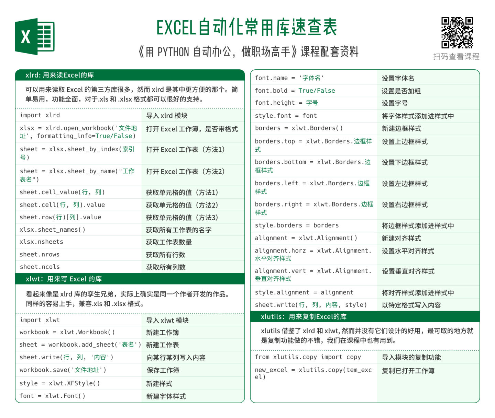
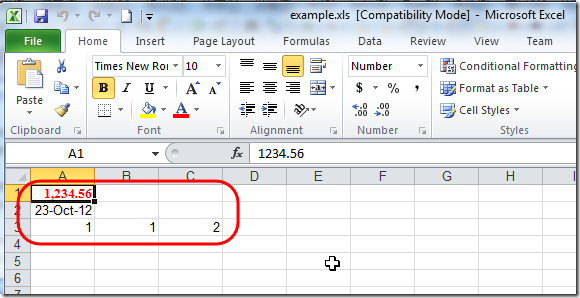

xlrd和xlwt
下载和安装
xlrd
从
http://pypi.python.org/pypi/xlrd
下载，最新版本的
得到130KB的xlrd-0.8.0.tar.gz
解压后，打开cmd切换到对应目录，去执行
setup.py install
xlwt
从主页：
http://pypi.python.org/pypi/xlwt
下载xlwt-0.7.4.tar.gz后，解压
切换到对应目录后，去安装：
setup.py install
xlutils
从主页：
http://pypi.python.org/pypi/xlutils
下载
得到47KB的xlutils-1.5.2.tar.gz
解压后，切换到对应目录后，去安装：
setup.py install
基本操作
概述：

新建excel文件
代码
import xlwt
from datetime import datetime
style0 = xlwt.easyxf('font: name Times New Roman, color-index red, bold on',num_format_str='#,##0.00')
style1 = xlwt.easyxf(num_format_str='D-MMM-YY')
wb = xlwt.Workbook()
ws = wb.add_sheet('A Test Sheet')
ws.write(0, 0, 1234.56, style0)
ws.write(1, 0, datetime.now(), style1)
ws.write(2, 0, 1)
ws.write(2, 1, 1)
ws.write(2, 2, xlwt.Formula("A3+B3"))
wb.save('example.xls')
效果

追加写入新数据
背景：想要添加写入数据到已经存在的Excel的xls文件，即打开excel文件，写入新数据
解决办法
想要往已经存在的xls文件中，写入新的行，新的数据，对应的逻辑为：
- 用
xlrd.open_workbook打开已有的xsl文件- 注意：添加参数
formatting_info=True，得以保存之前数据的格式
- 注意：添加参数
- 然后用
from xlutils.copy import copy拷贝出原有数据copy去从打开的xlrd的Book变量中，拷贝出一份，成为新的xlwt的Workbook变量
- 对xlwt的Workbook变量的正常的操作
- 通过get_sheet去获得对应的sheet
- 拿到sheet变量后，就可以往sheet中，写入新的数据
- 写完新数据后，最终save保存
代码
import xlwt
import xlrd
#import xlutils
from xlutils.copy import copy
styleBoldRed = xlwt.easyxf('font: color-index red, bold on')
headerStyle = styleBoldRed
wb = xlwt.Workbook()
ws = wb.add_sheet(gConst['xls']['sheetName'])
ws.write(0, 0, "Header", headerStyle)
ws.write(0, 1, "CatalogNumber", headerStyle)
ws.write(0, 2, "PartNumber", headerStyle)
wb.save(gConst['xls']['fileName'])
#open existed xls file
#newWb = xlutils.copy(gConst['xls']['fileName'])
#newWb = copy(gConst['xls']['fileName'])
oldWb = xlrd.open_workbook(gConst['xls']['fileName'], formatting_info=True)
print oldWb #<xlrd.book.Book object at 0x000000000315C940>
newWb = copy(oldWb)
print newWb #<xlwt.Workbook.Workbook object at 0x000000000315F470>
newWs = newWb.get_sheet(0)
newWs.write(1, 0, "value1")
newWs.write(1, 1, "value2")
newWs.write(1, 2, "value3")
print "write new values ok"
newWb.save(gConst['xls']['fileName'])
print "save with same name ok"